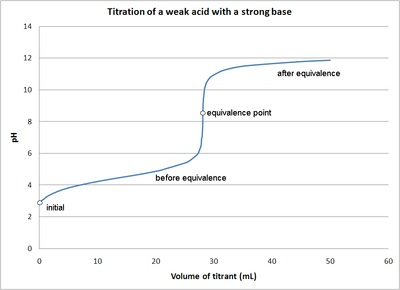
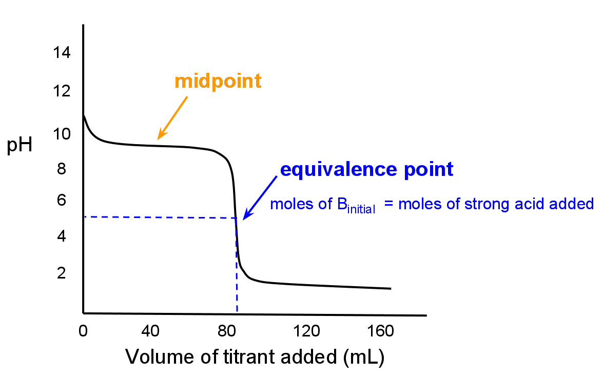
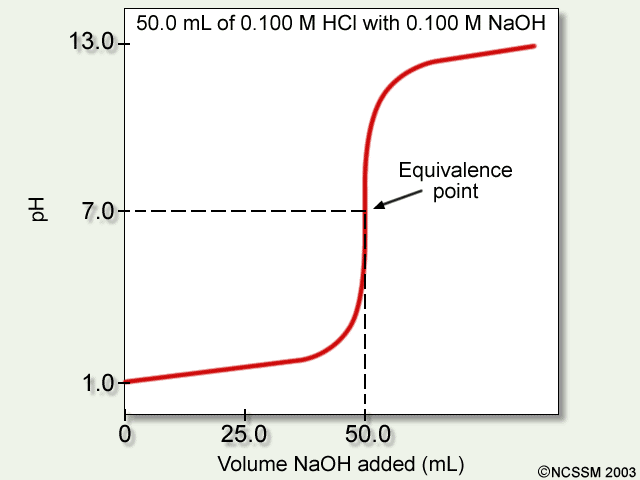
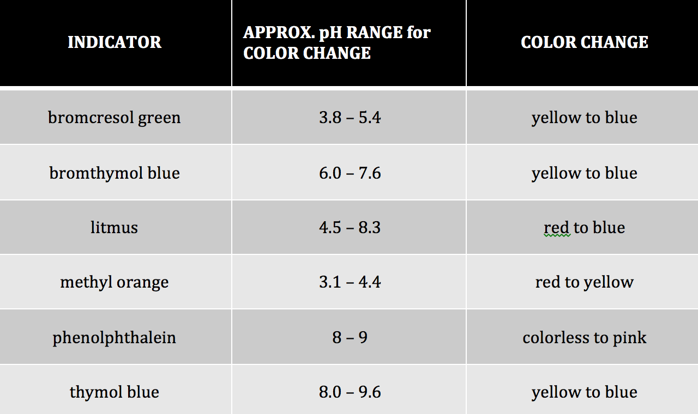
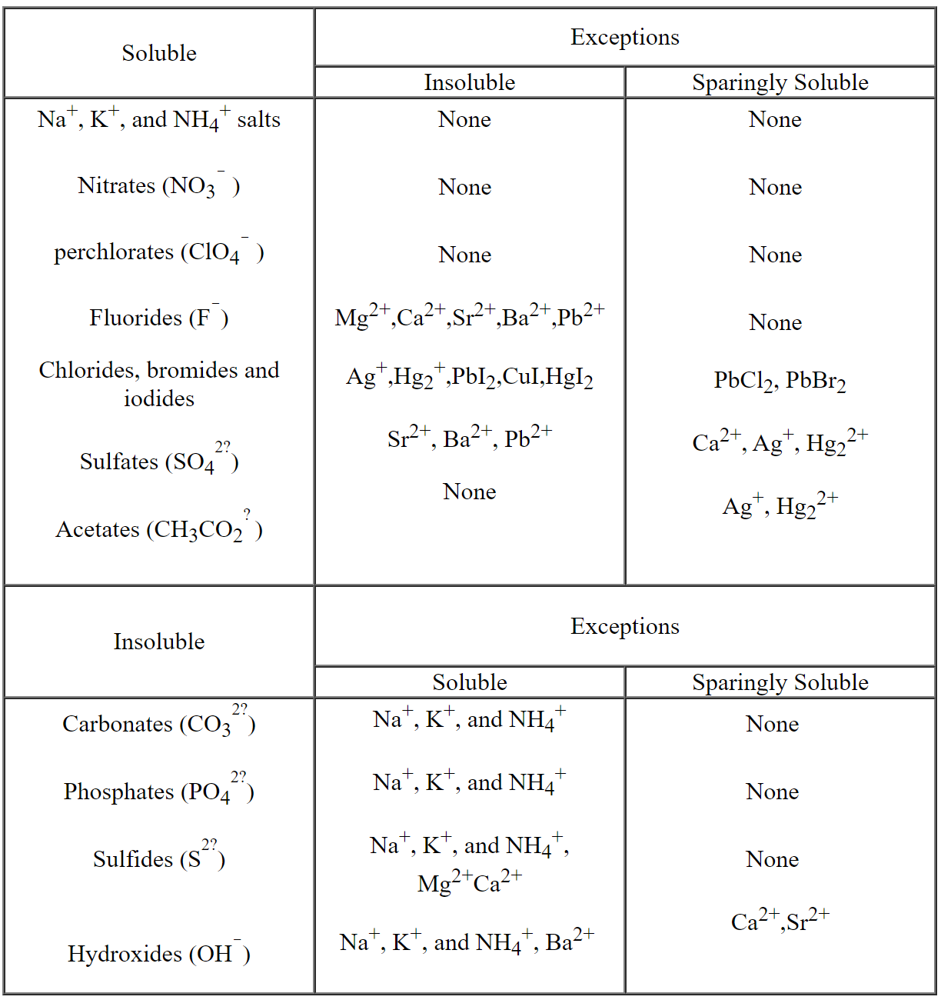

End Point
The endpoint of a titration is when the titration stops. The titration stops at the point where the acid and base have neutralized (moles are equal) each other.
Transition Point
The transition point of a titration is when the solution's pH reaches the pH of the indicators midpoint. At this time, the indicator's color will be the color between its starting pH range and ending pH range. This point is also typically when the titration is stopped, since it is also when the moles of OH- and H+ are neutralized
Equivalence Point
The equivalence point in a titration is where the H+ and OH- have completely neutralized each other (moles of H+ and OH- are equal). At this point, the solution is not always neutral. In titrations involving weak acids and strong bases or strong acids and weak bases, the respective weak acids/bases will not dissociate completely while the strong acids/bases will. This leads to an increase in the amount of H+/OH-, causing the equivalence point to be either less than or greater than a pH of 7.00
Stoichiometric Point
The stoichiometric point of a titration is when the moles of OH- and H+ are equal to each other. this is the point where the acid and base have truly neutralized each other.
Standard Solution
A standard solution is a solution of known concentration used to perform a titration against a solution with an unknown concentration. A standard solution can be created by determining the mass of a (pure) dry substance (calculated by finding the volume and molarity desired), and dissolving it into distilled water up to the aforementioned volume. Unfortunately, some acids and bases are extremely hygroscopic, meaning they tend to absorb large amounts of water. This can cause an issue when trying to accurately determine the mass of the substance, since some of the mass would be the mass of the water as well. In order to combat this, something called a primary standard is used to fulfill the same purpose as the standard solution.
Primary Standard
A primary standard serves the same purpose as the standard solution, however it is highly pure, non-hygroscopic, reacts rapidly with solution to be standardized, and is of a known concentration (same as standard solution). By using a primary standard, it is possible to measure a more accurate mass due to less interference from outside substances (primarily water). The primary standard is prepared the same way the standard solution is prepared; a volume and molarity is chosen, and given those values the mass of a substance required is calculated. The substance is accurately weighed out, and dissolved into distilled water until the volume previously stated is met.
Weak Acid Strong Base

The above image is a graph of a titration between a weak acid and strong base. The y-axis represents the change in pH, and the x-axis represents the addition of base (in milliliters) to the solution. At the start of this titration, the weak acid will only partially dissociate while the strong base will completely dissociate. This leads to a buffer zone, in which the pH does not change drastically due to the weak acid and its conjugate base. Any addition of H+ will be absorbed by the base, and any addition of OH- will cause the weak acid to donate an H+ to form water (neutral, no pH major change). Once the addition of base supercedes the low pH change wiggle room of the buffer zone, the equivalence point is soon reached when the addition of the base is enough to completely neutralize (moles H+ = OH-) the acid. At the moment in time where the equivalence point/stoichiometric point (interchangeable) is reached, so is the transition point (as long as the equivalence point pH is within the midpoint range of a chosen indicator), and therefore the end point as well. In this specific example of a weak acid and a strong base, the equivalence point pH is greater than 7.00. This is because that even though the H+ and OH- have been neutralized, the weak acid's conjugate base is left in solution, causing the pH to be more basic.
Strong Acid Weak Base

Disclaimer: the image above is representing a titration with a titrant that is a base and a titrand that is an acid; this leads to the overall pH at the start of the titration to be basic, and in turn, the graph is flipped along the y-axis. If this titration was done using the base as a titrand and the acid as the titrant, the graph would look more like the weak acid and strong base with a buffer zone at the end instead of at the beginning.
Strong Acid Strong Base

A titration involving a strong acid and a strong base is fairly different when compared to a titration between a strong acid and a weak base. The titration curve of a strong acid and base does not include a buffer zone, as a buffer is not formed due to the complete dissociation of both acid and base. A salt is not formed either, so there is not any hydrolization that causes any pH changes in the solution. Due to the fact that at the equivalence point the moles of H+ and OH- are directly equal to each other, the pH of a strong acid and base titration is exactly 7.00.
Indicators
Indicators are used to detect changes in pH in a solution by changing colour. Every indicator is a little bit different in the ranges of their colour change or the colour that they display. Below is a chart presenting the ranges of several popular indicators: The lower bound of the pH in this indicator table represents the colour of the indicator in a solution with pH lower than that value. The range of values shown directly on the table is the mid range of the indicator; at any pH in that range, the indicator can change to a colour between its lower and higher bound colours. For example, if an indicator has a lower bound colour of yellow and an upper bound colour of blue, the colour in the middle range would be green. The upper bound number shown on the table represents the colour of the indicator at pH levels above that bound. When choosing an indicator for a titration, it is generally best practice to choose an indicator with a middle range corresponding to the predicted pH of the equivalence point. Indicators are usually weak acids or bases, and when dissolved in water, they dissociate slightly into their ions. Indicators form an equilibrium with the water, demonstrated in the equation:
HIn + H2O <-> H3O+ + In-
As shown above, the indicator, HIn, forms an equilibrium with its acid and base conjugates. The acid conjugate of the indicator displays one colour (lower bound colour), whereas the base conjugate of the indicator displayer the other colour (upper bound colour). When the moles of acid and base conjugate are equal to each other in the equilibrium, the colour that is displayed is a mix between the lower and upper bound colours. In titrations, this middle point of colour change is recognized as the end point of the titration. When the pH of an indicator is within its lower bound, the stress on the equilibrium causes more moles of the acid conjugate to be within the system (lower bound colour dominates). When the pH is within the upper bound of the indicator, it causes the stress on the equilibrium to favour the reverse reaction and leads to more base conjugate in the system (therefore, upper bound colour shows).
Equilibrium
* Very closely related to buffers in titrations *
An equilibrium is established in a system when a reversible reaction reaches a point where the reaction rate of the forward reaction is equal to the reaction rate of the reverse reaction. At this point, the concetration of both sides of the equilibrium will remain constant, yet will still be constantly moving back and forth (hence the name dynamic equilibrium). Equilibrium is easily observable in titrations involving buffer zones (strong acid with weak base and weak acid with strong base). An example of a simple equilibrium could be one between an HF and NaF. Since HF is a weak acid, it will not dissociate completely in water when compared to a strong acid. As the dissociation reaction between HF and H2O goes on, it will eventually establish an equilibrium. Once equilibrium is establish in this buffer solution, the addition of the conjugate base in the form of NaF will increase the concentration of the F- ions. NaF is a strong base, and it will dissociate completely when dissolved into water (reaction goes to completion). In this solution, the initial equilibrium established by the HF and H2O will be stressed by the addition of the The following equations are a demonstration of what this equilibrium could look like:
Addition of weak acid:
HF + H2O <-> H3O+ + F-
Addition of strong base:
NaF + H2O -> Na+ + F-
Stress on weak acid equilibrium
HF + H2O <-> H3O+ + F-
↑ ↑ ← ↓ ↓⤊
Once this equilibrium is created, the large presence of acid and base conjugates will lead to the solution essentially removing any additional acids or bases since the conjugate acid and base in the solution will bond with any extra H+ or OH- ions added.
Salt Solubility
When a salt is added to a solution (distilled water), it is important to be able to determine whether or not it will dissociate into its separate ions within that solution. This concept of a salt dissociating into its basic ions is called solubility; it describes the behaviour a given compound has when placed inside of a solution (whether or not it will dissolve or not). Below is a chart describing whether or not a certain compound will dissociate into ions:In titrations, salts are generally always soluble (except for some specific cases). There are very few scenarios in which an insoluble salt would be created, as the whole point of the titration is to find the equivalence point, and any precipitation of a salt could potentially affect the end point of the titration. Due to the fact that salts formed during titrations are (basically) always soluble, the dissociation of salts can potentially affect the outcome of the equivalence point pH.
Hydrolysis
In a titration involving a strong acid and a weak base, the pH of the equivalence point is often noted to be below 7.00. Conversely, in a titration involving a weak acid and a strong base, the pH of the equivalence point is observed to be above 7.00. The change in pH is caused by the conjugate base/acid of the weak titrant causing a solution to be slight basic or acidic, respectively. This conjugate base/acid is brought into being by the *salt* formed during the titration hydrolizing with water molecules in the solution. Here is an example of a weak acid and strong base titration with a pH above 7.00 due to a hydrolizing salt:
NaOH(aq) + CH3COOH -> CH3COONa + H2O
CH3COONa -> CH3COO- + Na+
CH3COO- + H2O -> CH3COOH + OH-
As demonstrated in the above equations, the salt, CH3COONa hydrolizes to eventually produce OH- ions, therefore giving the solution a more basic, greater than 7.00, pH. For strong acid and weak base titrations, the exact same scenario occurs, however the salt ends up giving off H+ ions, causing the solution to be more acidic (pH lower than 7.00).
Buffers
Buffers are able to resist small changes in a solutions pH by detecting stresses and shifts between specific compounds in a solution and restoring equilibrium by essentially 'removing' added protons and hydroxide ions. Buffers consist of weak acids (CH3COOH) and their conjugate bases (CH3COONa, containing base CH3COO-), and vice versa of weak bases (C5H5N) and their conjugate acids (C5H5NH+, proton donated by H2O). Buffers are observed in titrations involving weak acids with strong bases, and strong acids with weak bases due to the aforementioned requirements for a buffer to be created (proven by the buffer zones in those titration curves). In terms of how buffers actually work, when their is conjugate acid and base in a solution, they are able to neutralize other acid and bases added in. A weak acid or base will continuously dissociate until it establishes an equilibrium with the water molecules in the solution. At this point, the addition of a conjugate base/acid will increase the concentration of the conjugate acid/base in the solution, and therefore decrease the amount of dissociation established in the beginning equilibrium.